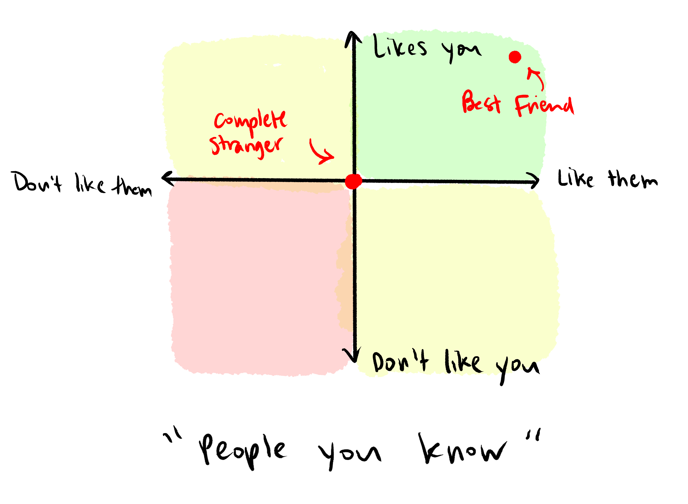
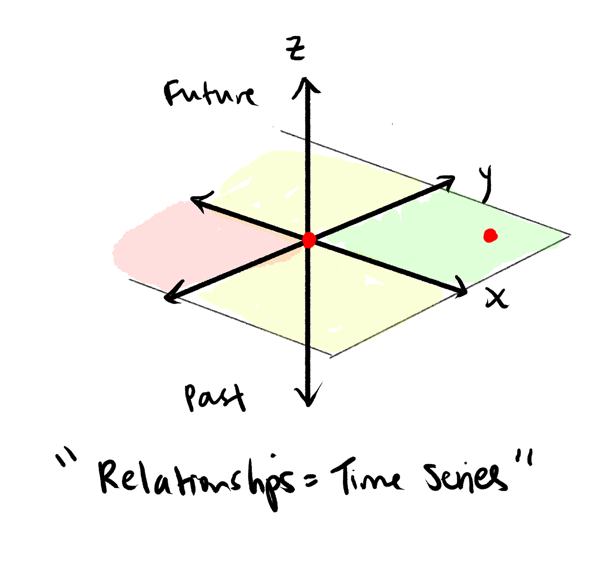

Hey guys, this site is going to be gone when I lose my MIT athena account in a few days. I created it in summer 2020 out of covid boredom and general loneliness. I have barely touched it since early 2021. I've changed a lot since then, but kept the site up as a fun window to the past. Now that it's about to be gone, I wanted to return here and come full circle. What a journey it's been.
2022 has been by far the most turbulent year of my life, with big changes, new highs, and incredible lows. One of my psychological defense mechanisms is to detach and views things objectively. I like to reframe trauma as metaphors because they seem less personal and explicit. Metaphors can't hurt you and are vague enough to let the reader decide what they want to take away. So without further ado, here are some metaphors from a traumatic year.
Contents
This year, I graduated. I feel like recycled jewelry. MIT broke me to pieces, melted them down, and cast me into a new shape— the shape of person I so desperately wanted to become. But an alloy is still an alloy at the end of the day, and I'll never be pure gold regardless of what shape I take. There's gold in me that MIT has surfaced, but it's not enough, and I learned to disregard the other metals that form my identity. I lamented not being 24 karat rather than recognize that copper, when added to gold, makes it stronger.
But even if MIT didn't alter my composition, altering my shape has more pervasive effects than I'd realized. Months out from school, my jaded weariness has transformed into boredom and a lack of direction. At best, I'd call this ambition; at worst, Stockholm Syndrome. Complacency is more unsettling than I had anticipated, and I find myself yearning to want things, but not yet knowing what those things exactly are. You can either be happy or hungry, but what does it mean to be full? When the arena is ill-defined, the goals are self-defined, and the question of how to live well frequently weighs on my mind. Seeking the answer, however, appears to be a lifelong journey, and one I've only just begun.
This year, I moved to NYC. I had to relearn how to make friends from scratch. Good friends are one of life's greatest treasures; however, there's merit in enjoying time spent alone and investing in meaningful connections over company for the sake of company. But how do you discern the former from the latter? Relationships are very multidimensional, so let's throw PCA at it. Good relationships rely on enjoying each other's company, so I've identified the principal components as follows: (x) how much you enjoy their company and (y) how much they enjoy your company. Conveniently, this decomposition abstracts away the actual reasons for enjoyment (or lack thereof), which vary by individual. Using this system, you can plot anybody wrt their relationship to you.
But this view doesn't provide the full picture. Assuming we all start as strangers, how does your best friend become your best friend? We're missing another axis here: (z) time. Relationships are dynamic, so they're better modeled as a time series than an individual point; they live in 3-D space. So a cross-sectional slice along the z-axis provides a 2-D snapshot of your relationships at that point in time.
So to answer the original question: which relationships should we invest in? Learning how to discern relationships makes it simple to decide which ones to invest in. Abstractly, investing in a relationship means spending time to move it in the positive x and y directions. Concretely how to move in this direction is the hard part and varies by individual. Knowing that relationships are dynamic provides a peace of mind that naturally, it's natural if the people closest to you today aren't the people closest to you in a few years. Relationships ebb and flow, so the best we can do is to discern the fulfilling ones, know how to invest in them, and recognize when to let go.
This year, I made my own birthday cake. I'd never baked a proper cake before, but I cooked a lot when I first moved. Cooking was a productive anesthetic, occupying my time and mind to protect it from the thoughts that might otherwise seep in. In the past when life got difficult, I turned to art as an escape. But this year brought problems an order of magnitude above anything I'd faced before, and it's hard to muster the vulnerability and cogency to make art when you're in the thick of drowning.
In April, a friend gifted me a copy of Michelle Zauner's Crying in Hmart, a memoir honoring Zauner's late mother, documenting a mercurial mother-daughter relationship spanning cultures. Zauner highlights the way food could bridge that divide, binding us to memories and parts of our identities. The memoir resonated on many levels, its themes of misunderstanding and cancer painfully familiar this past year. I felt less alone reading it. Though I don't have the same nostalgic attachment to food as Zauner, even the labor of cooking and putting nutritious food on the table is itself a love language, even if the food doesn't taste good. And if food is indeed a vessel for memories and identity, I hope the friends who tasted my birthday cake could also taste my gratitude for them and the pain of my year baked into each slice.
Well, metaphorically. It probably tasted like cake.
What does it mean to be an adult? This year taught me that being an adult is less about navigating taxes and paying rent than navigating difficult situations and taking accountability for your decisions. Growing up is the realization that the adults and authority figures in your life are just fallible people too, and sometimes you need to be the bigger person. It's the understanding that others can't purchase equity in your life. The times when only you can save yourself will only become more frequent. Adulthood is like drowning without lifeguards, either you sink or you swim.
Thank you from the bottom of my heart to everyone who has helped me grow as a person. It's a privilege to have you in my life. Looking forward to more growth in 2023.